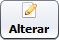

O que é o diretório de gravação de vídeos?
O diretório de gravação de vídeos é a pasta local da estação de trabalho, onde serão armazenados os arquivos de vídeos gravados em exames e procedimentos médicos. É muito importante que no disco onde está localizado este diretório tenha um bom espaço disponível. Nós recomendamos no mínimo 50 gigabytes (GB) de espaço reservado. Por padrão a pasta está definida em "C:\VIDEOS".
Como definir o diretório
Esta configuração é acessada pelo menu Ferramentas » Parâmetros do Sistema » aba Outras Opções.
Para iniciar a configuração, clique no botão  e preencha o campo Pasta de gravação de vídeos.
É possível selecionar a pasta clicando no botão .
Após definir o caminho desejado, clique no botão  .
.